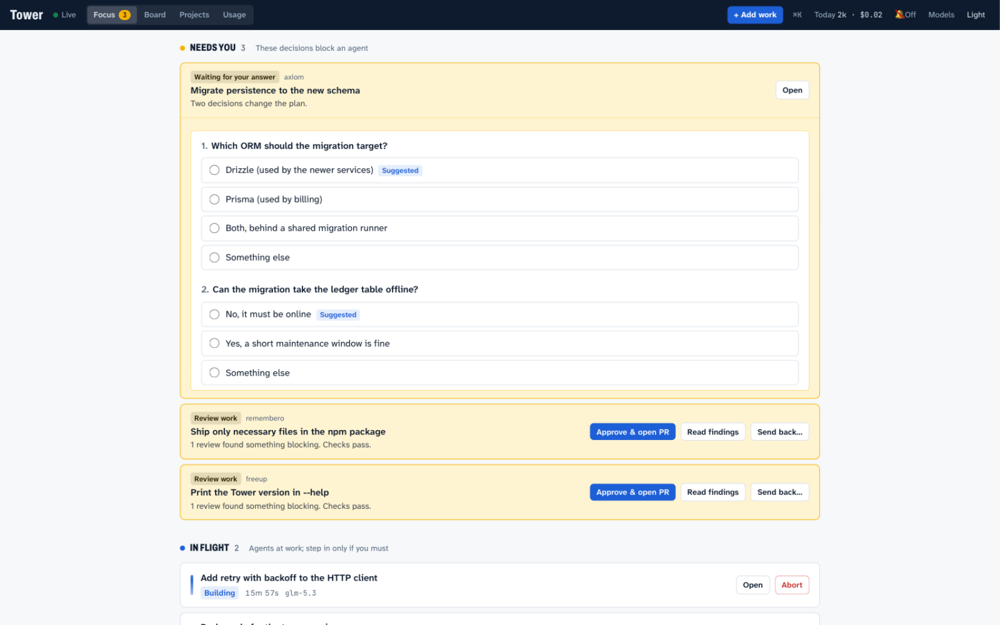
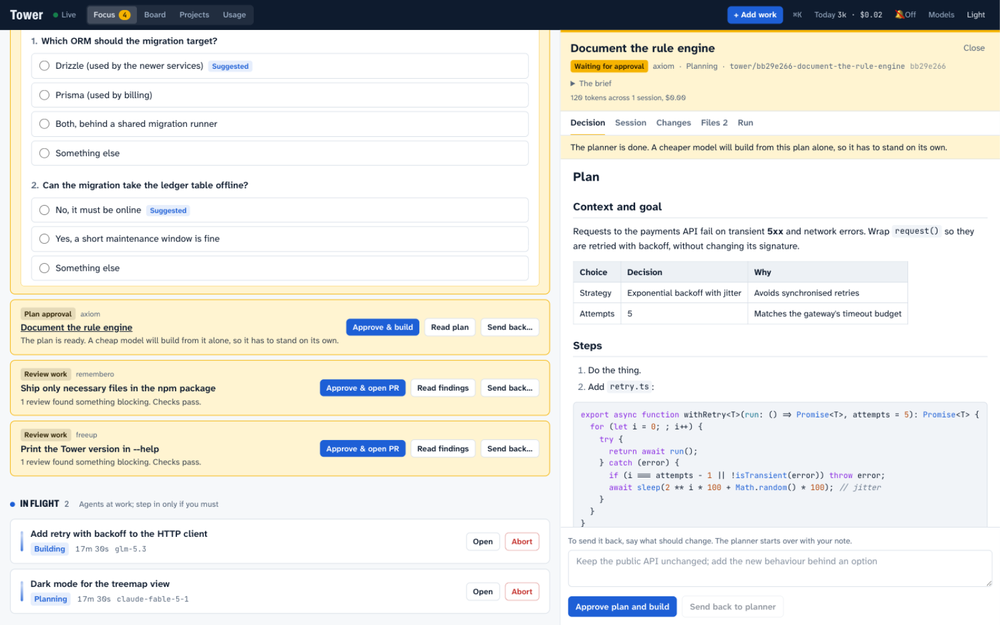

Hand off the work. Keep the decisions.
Tower runs pi coding-agent sessions across all your projects from one board. A strong model plans, a cheap one builds, your test suite judges the result — and Tower brings you exactly the decisions that are yours, each answerable where it appears.
pi install git:github.com/rahult/tower
Then type /tower in any pi session. The board opens at 127.0.0.1:4700.
Needs you these decisions block an agent
In flight agents at work; step in only if you must
Finished today
- Needs you
- An agent is working
- Finished
One click, right where the question appears
Every decision Tower needs from you lands in one amber tray at the top of the board. Approve a plan, answer an agent's question, or send work back with a note — the controls are on the row itself, so the ordinary path never requires opening anything.


How a card moves
Tell Tower what you want done. From there the card drives itself through seven stages and stops twice, both times for you.
-
A strong model plans
The planner explores your repository and writes
plan.md. It changes nothing. Planning defaults toanthropic/claude-fable-5-1, because a wrong plan is the costliest mistake a cheap builder can inherit. -
You approve, in one click
The card turns amber in the Needs you tray. Read the plan; approve it, or send it back with a note. If the planner hit a decision that is yours, it asks first — with suggested answers you can click.
-
A cheap model builds from the plan alone
Building is a fresh pi session that sees the plan and nothing of the planner's conversation. It works in the card's own git worktree and commits on the card's branch. Building defaults to
zai/glm-5.3. -
Your tests decide
Tower runs the project's verify command, for example
pnpm test && pnpm typecheck, and reads its exit code. A failure goes to a fresh builder together with the output. After three builds the loop stops and the card asks for you. -
Reviewers who never saw the work
Review flows run in fresh sessions with no edit access: an adversarial review that tries to break the change, and a SOLID design review. Their findings wait for you, alongside the diff.
-
You approve the work; it becomes a pull request
Approve from the row, and Tower opens the pull request with
ghand watches it: failing CI goes back to a builder, a merge finishes the card and it settles, quietly, into Finished today. A repository with no remote just finishes, with the branch ready to merge.


What it takes care of
- Attention, not alarms
- Everything that needs you gathers in one tray, ordered by what blocks an agent. Answer in place, or open the card for the whole story. Away from the tab? Tower can ping you with a browser notification.
- A worktree per card
- pi has no repository locking, so Tower gives every card its own git worktree and branch. Two cards can build in one project at once, and your checkout is never touched.
- A fresh session per stage
- Stages hand off through files such as
plan.md, never through a shared conversation. The builder starts with a clean context, and a reviewer never inherits the author's reasoning. - Questions, not guesses
- An agent that hits a decision that is yours stops and asks, with options you answer by clicking. Its session continues with your answers, so nothing it learned is thrown away.
- One keyboard
⌘Kopens a command palette: add work, jump to any card, switch views, change the theme.nstarts a new card,⌘1–4switch views.- Where the tokens go
- Every run reports its tokens, and a dollar figure when there is a real one. Usage breaks down by day, project, model and card.
- A queue that survives restarts
- Global and per-project caps decide how much runs at once. The queue is stored; sessions cut off by a restart resume where they stopped.
- Locked-down sessions
- pi has no tool-approval step, so stages start with
--no-extensionsand without project trust. Both are opt-in per project.
Install
You need pi, git, npm and Node 22.18 or newer.
pi install git:github.com/rahult/tower
Start pi from a shell that has your provider API keys, then type /tower. The first run builds the board, starts Tower in the background and opens it at
127.0.0.1:4700. Tower keeps running after you quit pi.
/tower |
Start Tower if needed and open the board |
|---|---|
/tower add <title> |
Add a card for the repository you are in. It becomes a project the first time |
/tower run <title> |
Add a card and start planning it |
/tower status |
What is running, and what is waiting for you |
/tower settings |
Show or change which model runs each stage |
/tower stop |
Stop Tower. Running sessions can be resumed next time |
pi packages run with full access to your machine, and Tower runs agents that execute shell commands in your repositories. Read the source before you install it.
The opinions are yours to change
Four small functions hold Tower's judgement calls. Each ships with a deliberately plain default and a comment that lays out the trade-off. The concurrency caps are enforced outside them, so a policy can only choose among cards that are allowed to start.
// packages/core/src/policy/scheduler.ts
// Keep every lane moving, or finish what is started?
export function pickNext(candidates, state) {
const [first] = [...candidates].sort((a, b) => a.queuedAt - b.queuedAt);
return first?.cardId ?? null;
}requiredGates- When may a small plan skip your approval?
decideAfterFailure- Stop early when the same error repeats? How much output does the builder get?
pickNext- Which waiting card gets the next free slot?
pickModel- Move to a stronger model after a failed build?
Where it stands
Tower is early, and complete from backlog to merged pull request: planning, the plan gate, building, testing with the retry loop, review flows, the feedback gate, pull requests with CI repair, scheduling, restart recovery, questions, model settings and on-demand runs. Tests run the whole daemon end to end, and planning, building, testing and questions have been run against real pi sessions.
Not yet proven against the real thing: the pull request stage has only met a stand-in for GitHub. Expect rough edges there, and say so when you find one. The design is in the repository.